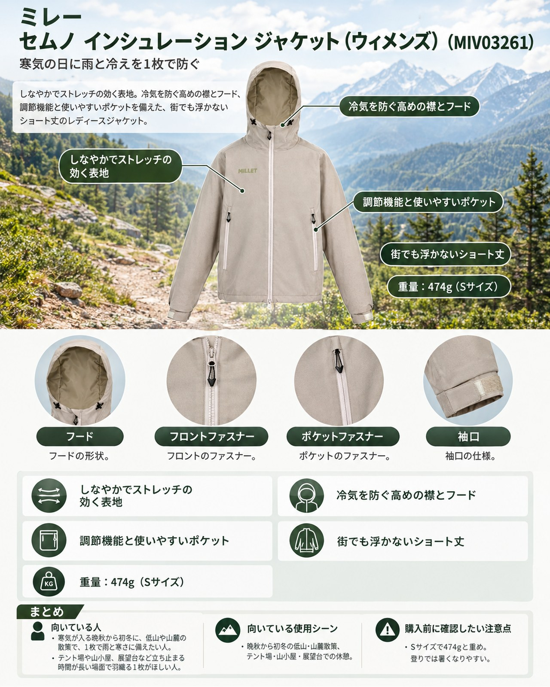

10月28日ごろから強い寒気が入り、冬型の気圧配置になる見込みです。週の前半に雨が続いたあとで、全国的に気温が一気に下がります。立山ではすでに厚い氷が張り、山小屋の営業終了も進んでいます。こうした時期の低山歩きや山麓の散策、テント場や山小屋での待ち時間では、「雨と風を防ぐシェル」と「保温着」を別々に持つほどではないものの、どちらか一方では心もとない場面が増えます。そこで紹介したいのが、ミレーの「セムノ インシュレーション ジャケット（ウィメンズ）」（品番 MIV03261）です。防水透湿の表地に薄手の中綿を合わせたフーディで、1枚で雨風と肌寒さに備えられます。ミレーが山で培った機能を日常のウェアに生かす「SEMNOZ（セムノ）」コレクションの秋冬モデルで、本格的な冬山用というより、晩秋の低山から街までを1枚でこなす位置づけのジャケットです。
基本スペック
仕上がり寸法は、Sサイズで着丈63cm、身幅60cm、裄丈84cmです。メンズ版（MIV03260）も同じ価格で展開されています。
| 項目 | 内容 |
|---|---|
| 商品名 | セムノ インシュレーション ジャケット（ウィメンズ） |
| 品番 | MIV03261 |
| 価格 | 税込27,500円（公式オンラインストア表示、2026年10月27日確認） |
| 重量 | 474g（Sサイズ） |
| 表地 | ドライエッジ メカニカル ストレッチ 2L（ポリエステル100%） |
| 中綿 | ポリエステル100%（60G/40G） |
| サイズ | XS / S / M / L |
| カラー | ROPE / BLACK-NOIR / OTTER |
防水透湿シェルと中綿を1枚にまとめた構成
表地はミレー独自の防水透湿素材「ドライエッジ」の2層構造で、縫い目はフルシームシーリングで処理されています。そこに薄手の中綿を組み合わせているため、冷たい雨や風の中でも、レインウェアと保温着を重ねずに1枚で済ませられます。寒気の入り際に、雨が雪やみぞれに変わるような日の低山や山麓で頼りになる構成です。
しなやかでストレッチの効く表地
表地はメカニカルストレッチ素材で、公式ページでは「しなやかで軽量の生地」とされています。中綿入りのジャケットは腕を上げたときにつっぱりやすいものですが、伸びのある生地なので、ザックの出し入れや車の乗り降りでも動きやすいつくりです。
冷気を防ぐ高めの襟とフード
首まわりを覆う高めの襟に、フィット感を調節できる中綿入りのフードを組み合わせています。首まわりから冷気が入りにくく、風の強い展望台や、日が傾いて急に冷え込む下山時にもフードをかぶれば頭まで覆えます。
調節機能と使いやすいポケット
フロントジップはダブルスライダーで、裾だけ開けてザックのヒップベルトを締めたり、座るときに裾を楽にしたりできます。袖口はベルクロ、裾はドローコードで締められ、すき間風を抑えられます。左右にはハンドジップポケットがあります。
街でも浮かないショート丈
「SEMNOZ」は、山と日常のどちらでも着られるウェアを目指したコレクションです。リラックスフィットでショート丈のデザインなので、登山口までの電車移動や山麓の町歩き、山から戻ったあとの普段着としても使えます。
デメリット・注意点
- Sサイズで474gと重め：シェルと保温着を1枚にまとめた分それなりの重さがあり、軽量化を重視する山行や、こまめに重ね着を調節したい山行では、シェルと保温着を分けたほうが扱いやすい場合があります。
- 登りでは暑くなりやすい：中綿入りのため、急な登りでは暑くなりやすいと考えられます。脇の下のベンチレーションは記載がなく、熱を逃がす手段はフロントジップの開閉が中心になります。
- 耐水圧・透湿性の数値が公開されていない：長時間の本降りや、稜線での吹雪にどこまで耐えるかは判断しにくいため、厳しい天候の高山では、性能値が公開されている登山用のハードシェルを選ぶほうが安心です。
向いている人・向いていない人
◎向いている人
- 寒気が入る晩秋から初冬に、低山や山麓の散策で、1枚で雨と寒さに備えたい人
- テント場や山小屋、展望台など、立ち止まる時間が長い場面で羽織る1枚がほしい人
- 登山口までの移動や普段着にも同じジャケットを使いたい人
△向いていない人
- 冠雪した高山や岩稜帯など、厳しい冬の環境を歩く人
- 重量を少しでも減らしたいファストハイクや、汗をかく急登が続く山行が中心の人
- 防水性能を数値で比べて選びたい人
まとめ
ミレー「セムノ インシュレーション ジャケット（ウィメンズ）」は、防水透湿の2層シェルに薄手の中綿を組み合わせた、晩秋の低山から街まで着られるフーディです。高めの襟と調節できるフード、ダブルスライダーのフロントジップなど、冷え込む日に役立つ機能がそろっています。一方で、1枚としては重めで、性能値も公開されていないため、冬の高山向けではありません。寒気が入るこの時期に、低山や山麓で「レインと保温着を1枚で済ませたい」人の選択肢になるジャケットです。
この記事で紹介した商品
価格・重量・在庫は各ブランド公式サイトの記載（確認日つき）にもとづきます。商品を押すと、購入先を選べます。
この記事にはアフィリエイト広告が含まれます。リンク先での購入により、当サイトが報酬を受け取る場合があります。山行の前には、最新の気象とルートの状況を必ずご確認ください。